15 Reasons to visit the Netherlands in Spring!
Spring is a lovely time to visit the Netherlands! The days are getting longer, the flowers make for beautiful sights and you can sit and enjoy a beer outside until late in the evening…. ok maybe in the beginning of spring a patio heater may be nice to make sure you’re warm enough but there will be plenty of days you can do without:) Want to know why you should visit the Netherlands in spring? Here you go:

1.Tulips
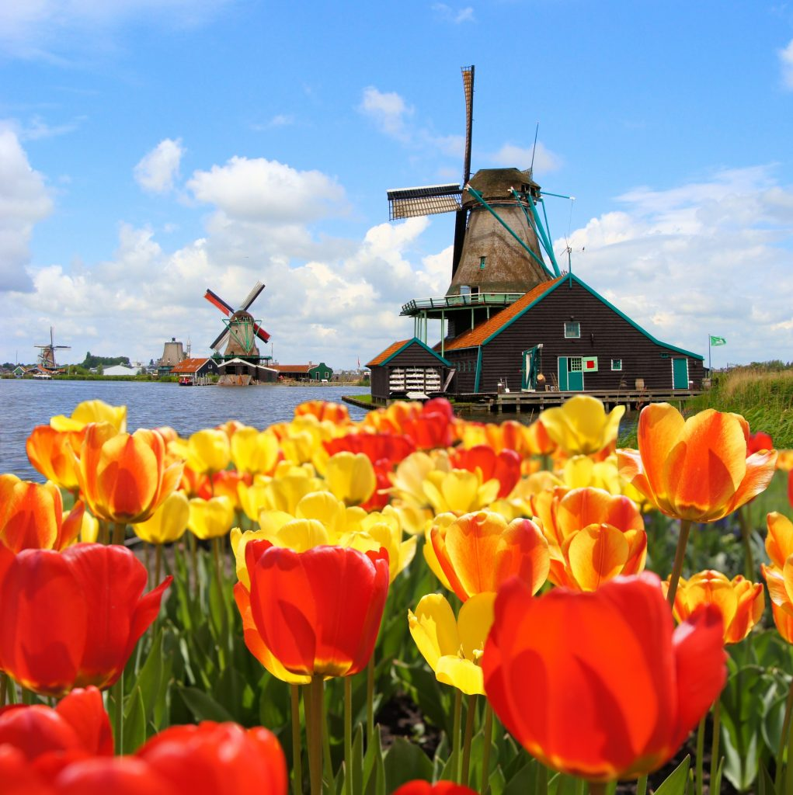
2.Tulips and Mills
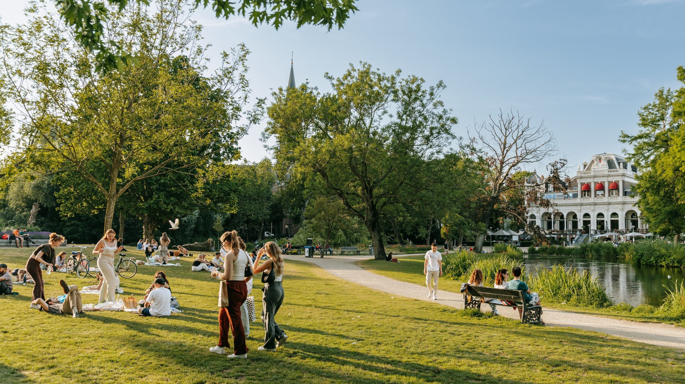
3. Take your bike out to the park
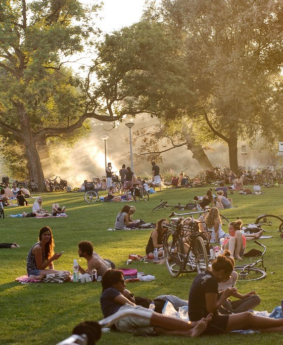
4. Pick nick in the Vondelpark
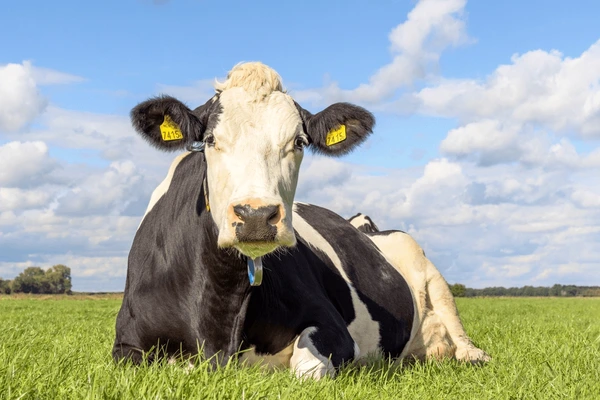
5. Even the cows are happier in spring!
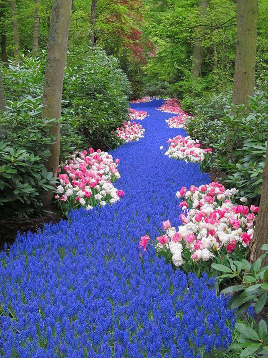
6. A river of flowers
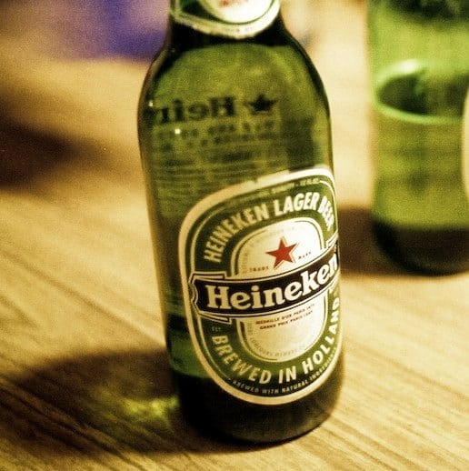
7. Drink a cold one
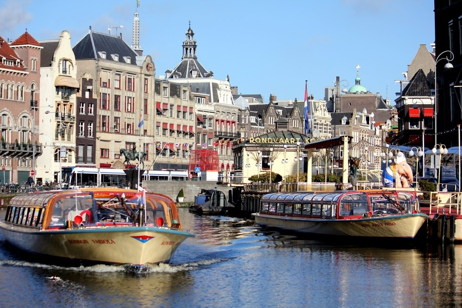
8. Canal cruise the cities
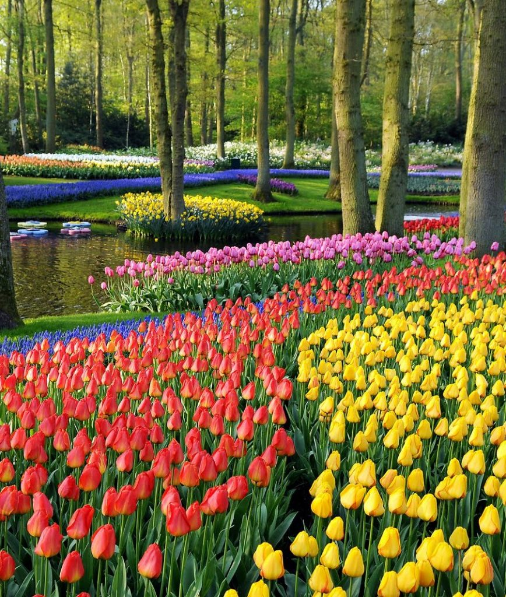
9. Keukenhof Tulips
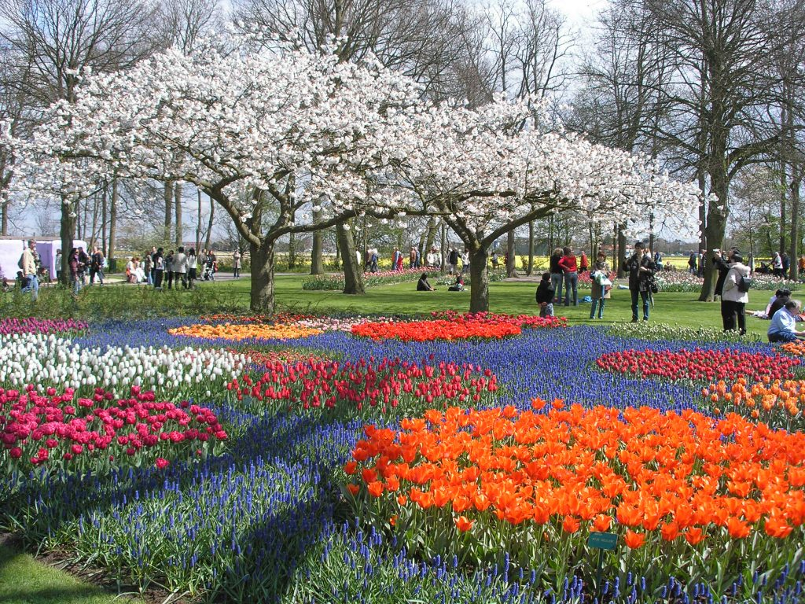
10. Some more flowers at the Keukenhof
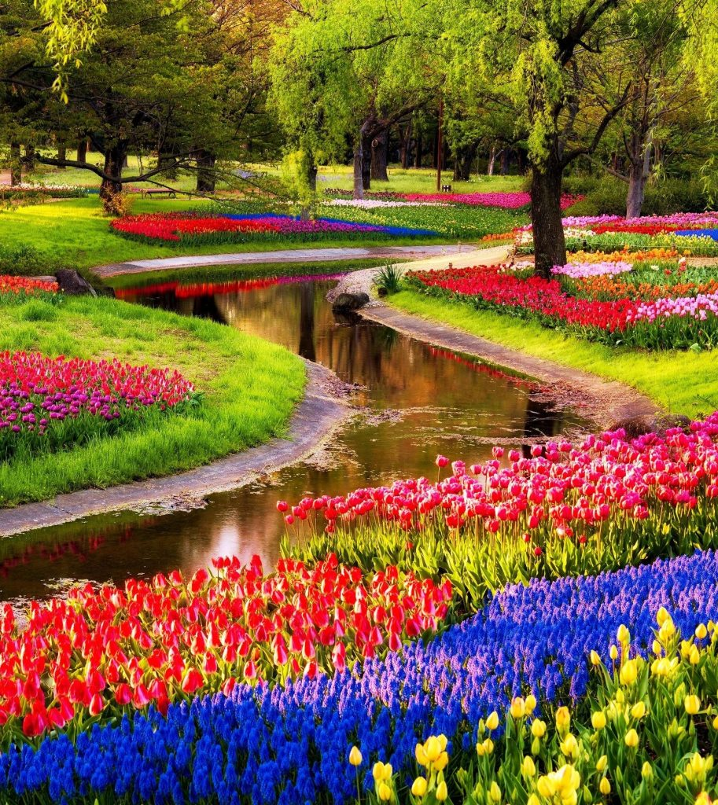
11. Keukenhof Water and Tulips
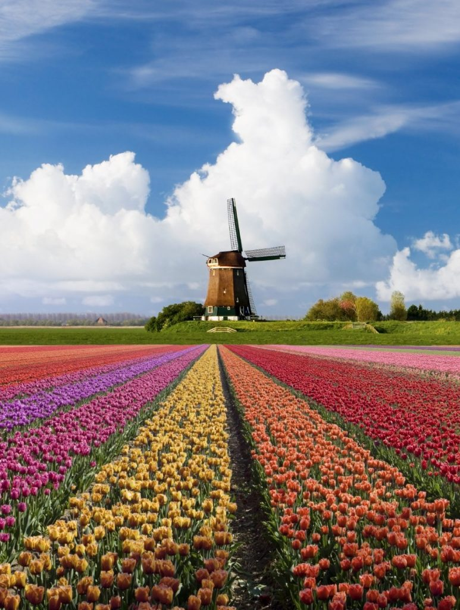
12. Beautiful tulip fields
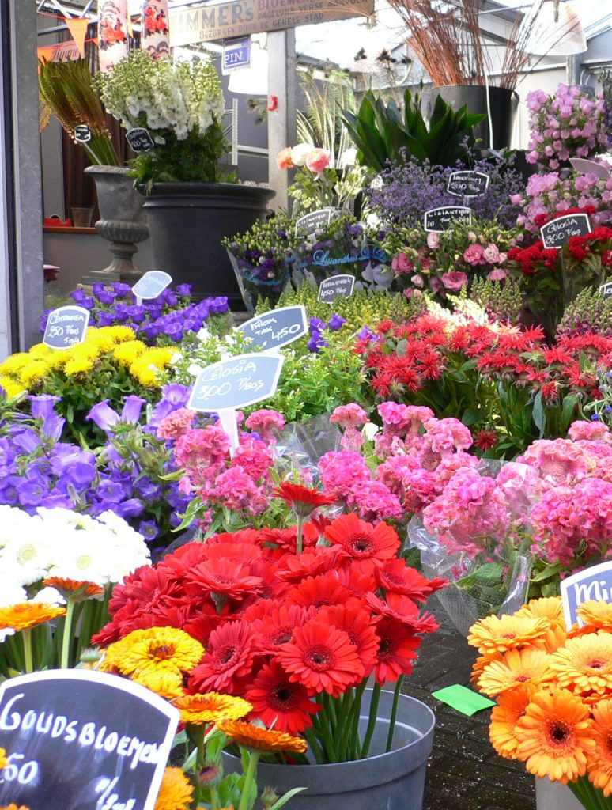
13. Flower Markets
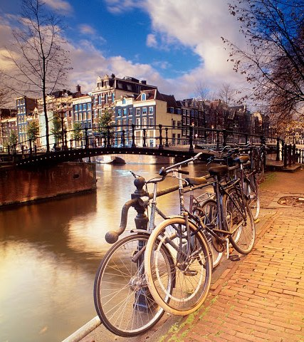
14. The beautiful canals
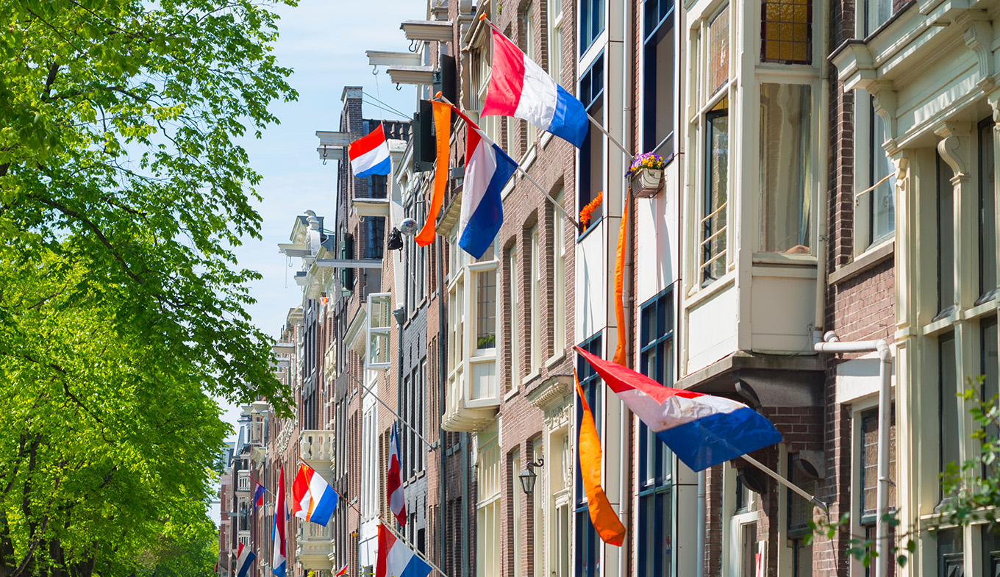